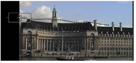
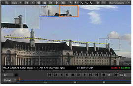
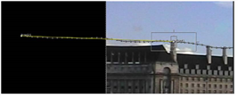

在上一个示例的结尾，您可能已经注意到当功能离开屏幕时，轨道被丢弃在 58 帧。当特征移出帧，或被图像中的其他元素遮挡时，可以使用 “轨迹偏移” 功能将跟踪操作传递到图像中的另一个特征。 核武器 然后尝试沿着其当前路线继续跟踪。
注意: 本示例使用自动跟踪，但关键帧跟踪的偏移原则相同。
| 1。 | 在项目工作区中，找到节点树 跟踪模糊特征 . |
| 2. | 双击 Tracker2 节点以打开其控制面板。此节点跟踪上一个示例中使用的剪辑中的一个烟囱。 |
| 3. | 将查看器附加到 Tracker2 节点，并擦洗时间线，直到您看到跟踪的功能移出帧。 |

正如你所看到的，track1 通过大部分剪辑准确地跟踪其功能 -- 直到它在 44 帧时离开屏幕。这就是问题的开始。
| 4. | 按加号键 ( + ) 在键盘上放大几次，以放大查看器。 |
检查序列以找到在剪辑长度期间保持在视图中的备用特征。
| 5. | 在 44 帧，按 Ctrl / Cmd 键并拖动 Track1 锚定在建筑物右侧的第一个烟囱上。 |

一条线将新特征连接到指示偏移的原始特征，以及 轨道 列表将更新以显示 x 和 y 偏移值。
| 6. | 在 跟踪器 控制面板，按 按钮，使用偏移功能继续关闭屏幕轨迹。 |

这怎么有用？嗯，现在你可以使用轨迹数据来匹配一个元素 -- 例如烟囱烟雾的轨迹 -- 即使在它离开屏幕后，它也会锁定该特征。
| 7. | 轨道现在已经完成，因此您可以通过单击来清除偏移 在查看器工具中。 |
| 8。 | 取消选择 轨道 1 在 轨道 列表以防止重新计算。 |
| 9. | 继续之前，请关闭当前打开的所有跟踪器控制面板。 |
偏移不会更改轨迹位置。相反，它允许 核武器 继续跟踪，假设偏移特征与原始特征保持相同的相对距离。在本章的后面，您将看到如何使用这些跟踪数据组合另一个元素来匹配背景板。
|
|